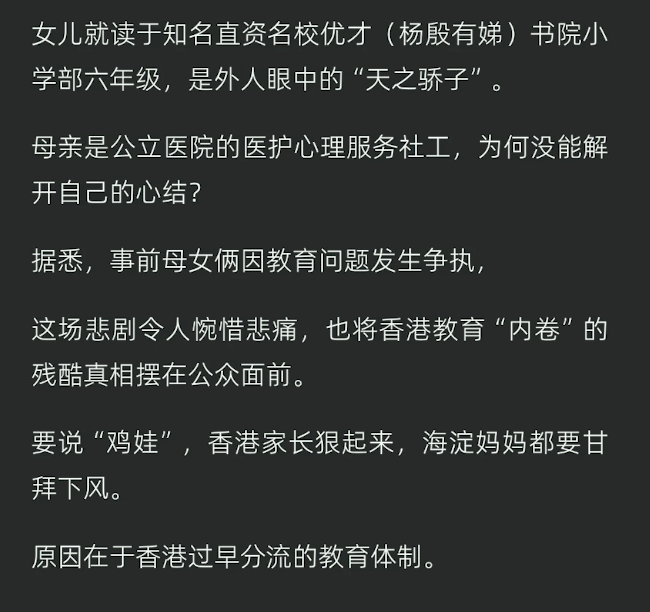

原文链接
https://t.co/YPV01IiLkm

https://t.co/YPV01IiLkm

看到这个新闻，小藤恍如隔世
本来在我印象中，香港的教育是全国最富有人性的，甚至还享有华侨优待，考大学很容易（仅限内地大学），就算没有退路，起码也可以来内地混一个本科学历...... https://t.co/N7eihRMGY6
本来在我印象中，香港的教育是全国最富有人性的，甚至还享有华侨优待，考大学很容易（仅限内地大学），就算没有退路，起码也可以来内地混一个本科学历...... https://t.co/N7eihRMGY6